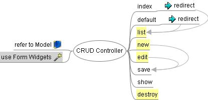

Contents
Basic model admin interfaces (create, read, update, delete, a.k.a, CRUD) are frequently used in creating web applications.
Here’s the tgcrud basic template generator which helps you to create an admin interface (the create, read, update and delete functions).
Fully customizable admin interface (the create, read, update, delete functions) with easy to extend(form validation, identity, paginate) templates.
No Magic
- The generated codes are normal TG source.
- No extra magic encapsulation. No need to rewrite the interface when you need extra flexibility (not the same as Rails’scaffold)
- Separate Form definition from Model (not the same as Django admin)
- Use standard TurboGears syntax and code organization.
- It’s a good crud implementation reference by TG.
TurboGears
- Bundles a TurboGears “tg-admin crud” command.
- Support SQLObject and SQLAlchemy models
- tgcrud kid interface works for you no matter whatever template engine you currently choose for your project.
- You could customize the model relationship by widgets(or do it in your way)
- Takes advantage of TurboGears form widgets and validation. you’d hardly need to modify the HTML.
The tgcrud command extension is available from the Python CheeseShop and the TurboGears Subversion repository. You can use setuptools to install tgcrud with following command:
$ easy_install tgcrud
or download the source code and install it manually. Or, just copy the code from this page into your project (see below).
Once you’ve defined your model, you can use the tg-admin crud command to generate the crud package. The syntax is:
$ tg-admin crud [model class name] [package name]
for example, if the model name is BookMark and the package name is BookMarkController, the command is:
$ tg-admin crud BookMark BookMarkControllerThen the BookMarkController package (folder) is generated. You just need to take a few minutes to customize the widget formfield to have a proper crud interface.
tgcrud generates plain TurboGears code, so you can do whatever you want on these package.
First, you have to customize the widget fields:
from bookmark.model import BookMark from turbogears import widgets class BookMarkFields(widgets.WidgetsList): # if we have a SQLObject model with 4 fields: name, url, excerpt, memo name = widgets.TextField(label="Name") url = widgets.TextField(label="URL") excerpt = widgets.TextField(label="Excerpt") memo = widgets.TextField(label="Leave Memo")Note
If you are not familiar with widgets yet, check out the Widgets Overview page.
All available form widgets are listed in the WidgetBrowser (tg-admin toolbox).
And you may want to add a schema for form validation as well (optional):
class BookMarkSchema(validators.Schema): name = validators.String(not_empty=True, max=30) url = validators.URL(add_http=True, check_exists=True) # append the following validatorsFor a referene of available validators, refer to the FormEncode documentation.
You see that you can even use the existing schemas without pain. You don’t really need to customize the form validation schema, but it’s good to know that you have the option.
Read the widgets documentation for detailed information on validator usage.
To use the admin interface, you need import the package to your controllers.py with a line like this:
from BookMarkController import BookMarkController
and add a sub-controller to your Root controller class:
foo = BookMarkController()
This way, the class BookMarkController will be mounted to the Root controller.
Start the server and open the URL http://localhost:8080/foo to use the customizable interface.
tgcrud 1.0 supports both SQLObject and SQLAlchemy models, By default tgcrud will detect the proper ORM for you. In cases you can specify the -s option to the tg-admin crud command for SQLAlchemy support, similar to the -s option of the tg-admin quickstart command. Example:
$ tg-admin crud -s BookMark BookMarkController
The generated templates will use ‘id’ as the default primary key. While SQLObject use ‘id’ as it’s primary key, it works well with SQLObject models. But if we take SQLAlchemy models into consideration, SQLAlchemy provide the flexibility to use variety names as primary keys. Thus tgcrud allows you to specify the “-i(id)” option, which is denoting to your model’s primary key, to the tg-admin crud command. Example:
$ tg-admin crud -i user_id User usermin
tgcrud generates ‘no-magic’, plain TurboGears code. It is not an automatic admin tool such as Catwalk in TurboGears or the admin interface in Django. tgcrud’s aim is to save you time for basic CRUD interface design decisions (in TurboGears) and generate the skeleton code for production. You have to handle the advanced model relationships by your self. Fortunately we can provide a strategy guide for using relational joins.
Before doing Relational Joins, you should open the tg-admin shell(or use Catwalk if you are using SQLObject) and make sure you can do the basic operations around your USER -Group models.
Then, apply the same operation on the (hand made/generated by tgcrud) interface. That would be:
For relation joins you’d assign ‘object’ instead of plain parameters.
My approach is using SelectField in the widget form and overwrite the parameters in the save method.
For example, in widgets.py:
....
+ book = widgets.SingleSelectField(label="book",
+ options=[(entry.id, entry.title) for entry in book]
+ )
In controllers.py:
def save(self, id=None, **kw):
#update kw
+ if kw['book']:
+ kw['book'] = Book.get(int(kw['book']))
#update
....
#create
....
It’s an interesting Python trick, we overwrite the kw['book'] value in the kw dictionary with the object with the id referred to by the value.
If you don’t like it, you can customize the joins in a normal way.
Try CheckBoxList, MultipleSelectField or the SelectCheck widget plugin.
Take User-Group relationship generated by identity for example. You have two steps to do:
- Form the selected groups to a group check list (or something else)
- process the select group
My approach is using CheckBoxList in the widget form and overwrite the parameters in the save method.
For example, in controllers.py (step 1):
def show(....):
....
record = User.get(int(id))
check= widgets.CheckBoxList(label = "Groups", name= "user_groups",
options=[(entry.id, entry.group_name) for entry in groups],
default=[entry.group_id for entry in record.groups]
)
In controllers.py (step 2):
def save(self, id=None, **kw):
#update kw
try:
groups = list(kw['user_groups'])
except:
groups = []
hub.begin()
record = User.get(int(id))
for group in record.groups:
record.removeGroup(group)
for group_id in groups:
record.addGroup(Group.get(int(group_id)))
hub.commit()
....
BTW, the example is suited for many-to-many relationships too.
You can try the SelectShuttle widget plugin to generate a selection form for many-to-many relationships. But in this example I’ll be using SelectField instead.
In controllers.py:
def save(self, id=None, **kw):
#update kw
if kw['authors']:
# assume there's only one author
obj_id = User.get(int(kw['authors']))
del kw['authors']
#update
else:
record = Book.get(int(id))
record.addUser(obj_id)
....
#create
if not id:
record = Book(**kw)
record.addUser(obj_id)
....
You can protect whole of your CRUD interface with one line of code. Just append a line in the main project’s controllers.py:
foo = BookMarkController()
+ foo = identity.SecureObject(foo,identity.has_permission('admin'))
Now only users with permission admin can access the foo CRUD interface.
Or you can protect specific methods with a @identity.require() decorator:
....
@expose()
@identity.require(identity.in_group("admin"))
def method.....
Check the TurboGears documentation about identity for details.
Search for ‘paginate’ in controllers.py. The pagination support code appears in the import section and just above the list method.
Uncomment the two lines. That’s all you need to do for pagination support in controllers.py:
from turbogears import paginate
....
@expose(template='kid:dnidoc.manage.templates.list')
@paginate('records')
def list(self, **kw):
....
then check template/list.kid, there’s a commented paginate panel:
<span py:for="page in tg.paginate.pages">
<a py:if="page != tg.paginate.current_page"
href="${tg.paginate.get_href(page)}">${page}</a>
<b py:if="page == tg.paginate.current_page">${page}</b>
</span>
Now you have solid pagination support for your list pages.
Check the TurboGears documentation about the paginate decorator for details.
Note
tgcrud skeleton uses id as the default primary key in templates, but SQLAlchemy can use variable key names. So if you are using SQLAlchemy, you may need to change the id parameter manually. Luckily there’re just 3 templates need to deal with:
For example, if you want a crud interface of the User model class, all you need to do is to replace id with user_id in these pages.
If you don’t want to use the tg-admin crud command , you can also integrate the CRUD code manually.
The latest template is available here:
http://trac.turbogears.org/browser/projects/tgcrud/trunk/tgcrud/templates/
This has also optional support for identity, paginate..., etc.
The following is the basic skeleton of the admin interface.
- Create a folder to contain the code. We take BookmarkController as an example.
- The structure is the following
#project/BookmarkController/
__init__.py
controllers.py
templates/__init__.py
master.kid
list.kid
form.kid
show.kid
When you first enter the interface, it will list all info in list page. You can create a new record by clicking the ‘New BookMark’ link. This will lead you to the new page. Similarly, when you click ‘edit’ or ‘show’, this will lead you to the ‘edit’ or ‘show’ page. Since the differences between ‘new’ and ‘edit’ pages are wrapped in widgets, these two pages share the same ‘form’ template. The basic operations of tgcrud are a full clone of the scaffold implementation in Ruby on Rails.
Add the following lines in your project’s controllers.py:
from BookmarkController import BookMarkController
....
class Root(controllers.RootController):
main= BookMarkController()
Note
Here’s a Python sub-directory importing trick from tgcrud’s __init__.py. Check out __init__.py_tmpl.
The full controller code is here:
from turbogears import controllers, expose, redirect
from turbogears import validate, flash, error_handler
from bookmark.model import BookMark
from turbogears import widgets, validators
class BookMarkFields(widgets.WidgetsList):
"""fields definitions. Replace to your Fields"""
# take name and url field for short example
name = widgets.TextField(label="Name")
url = widgets.TextField(label="URL")
class BookMarkSchema(validators.Schema):
"""
define validation schema that involves
field dependency or logical operators
"""
name = validators.String(not_empty=True, max=30)
url = validators.URL(add_http=True, check_exists=True)
class BookMarkForm(widgets.TableForm):
"""form builder"""
#name="BookMark"
fields = BookMarkFields()
#validator = BookMarkSchema() # define schema outside of BookMarkFields
#method="post"
#submit_text = "Create"
model_form = BookMarkForm()
class BookMarkController(controllers.Controller):
"""Basic model admin interface"""
modelname="BookMark"
@expose()
def default(self, tg_errors=None):
"""handle non exist urls"""
raise redirect("list")
@expose()
def index(self):
"""handle front page"""
raise redirect("list")
@expose(template='bookmark.BookmarkController.templates.list')
def list(self, **kw):
"""List records in model"""
records = BookMark.select()
return dict(records = records, modelname=self.modelname)
@expose(template='bookmark.BookmarkController.templates.show')
def show(self,id, **kw):
"""show record in model"""
record = BookMark.get(int(id))
return dict(record = record)
@expose(template='bookmark.BookmarkController.templates.form')
def new(self, **kw):
"""Create new records in model"""
return dict(modelname = self.modelname, form = model_form, page='new')
@expose(template='bookmark.BookmarkController.templates.form')
def edit(self, id, **kw):
"""Edit record in model"""
try:
record = BookMark.get(int(id))
except:
flash = "Not valid edit"
return dict(modelname = self.modelname, page='edit'
record = record)
@validate(model_form)
@error_handler(new)
@expose()
def save(self, id=None, **kw):
"""Save or create record to model"""
#update kw
if id:
#update
"""
record = BookMark.get(int(id))
record.set(name = self.name, url = self.url)
or
for attr in kw:
setattr(record, attr, kw[attr])
"""
for attr in kw:
setattr(record, attr, kw[attr])
flash("Bookmark was successfully updated.")
raise redirect("../list")
else:
#create
"""
assign the attrs one by one:
self.name = kw['name']
self.url = kw['url']
or
for attr in kw:
setattr(self, attr, kw[attr])
"""
#BookMark(name = self.name, url = self.url)
BookMark(**kw)
@expose()
def destroy(self, id):
record = BookMark.get(int(id))
record.destroySelf()
flash("${modelname} was successfully destroyed.")
raise redirect("../list")
You need to customize the following for your project:
- The BookMarkFields class
list.kid:
<body>
<h1>Listing ${modelname}</h1>
<table>
<tr>
<th> name </th>
<th> url </th>
<th> excerpt </th>
<th> memo </th>
</tr>
<tr py:for="record in records">
<td>${record.name}</td>
<td>${record.url}</td>
<td>${record.excerpt}</td>
<td>${record.memo}</td>
<td><a href="show/${record. id}">Show</a></td>
<td><a href="edit/${record. id}">Edit</a></td>
<td><a href="destroy/${record. id}" onclick="if (confirm('Are you sure?')) { var f = document.createElement('form'); this.parentNode.appendChild(f); f.method = 'POST'; f.action = this.href; f.submit(); };return false;">Destroy</a></td>
</tr>
</table>
<br/>
<a href="new">New ${modelname}</a>
</body>
You need to customize the following for your project:
- Column cells and labels
form.kid:
<body>
<h1>Editing ${modelname}</h1>
<div py:if="page=='new'">
${form(action='save', submit_text = "Create")}
</div>
<div py:if="page=='edit'">
${form(value=record, action=tg.url('../save/%s'%str(record.id)), submit_text = "Edit")}
</div>
<br/>
<div id="footbar" class="footbar" py:if="page=='edit'">
<a href="${tg.url('../show/%s'%record.id)}">Show</a> | <a href="${tg.url('../list')}">Back</a>
</div>
You need to customize the following for your project:
show.kid:
<body>
<table>
<tr>
<th> name: </th>
<td>${record.name}</td>
</tr>
<tr>
<th> url: </th>
<td>${record.url}</td>
</tr>
<tr>
<th> excerpt: </th>
<td>${record.excerpt}</td>
</tr>
<tr>
<th> memo: </th>
<td>${record.memo}</td>
</tr>
</table>
<br/>
<a href="../edit/${record. id}">Edit</a> | <a href="../list">Back</a>
</body>
You need to customize the following for your project:
- Column cells and labels